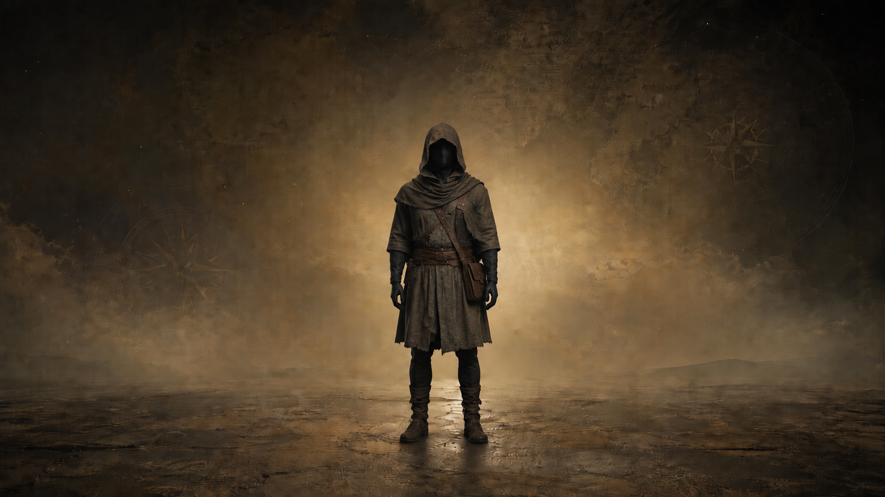

Incarnez un personnage à n'importe quelle époque.
Vos décisions façonnent votre histoire.
Vos parents viennent de mourir.
Vous avez 20 ans et l'équivalent de 1 000 $ en poche.
Le reste dépend de vous.
Les personnages apparaîtront au fil de l'histoire...